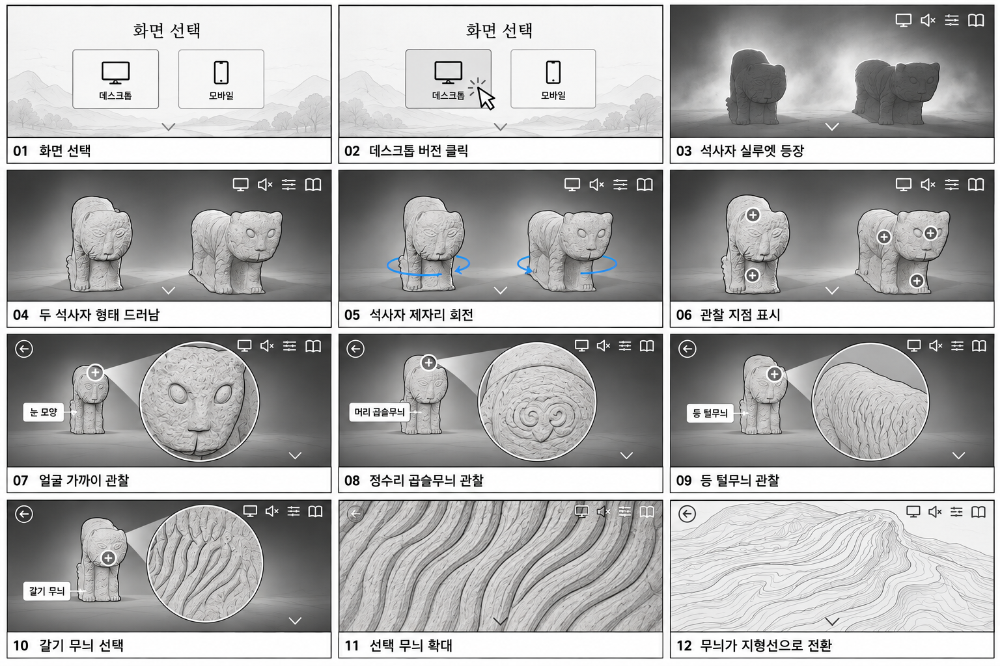
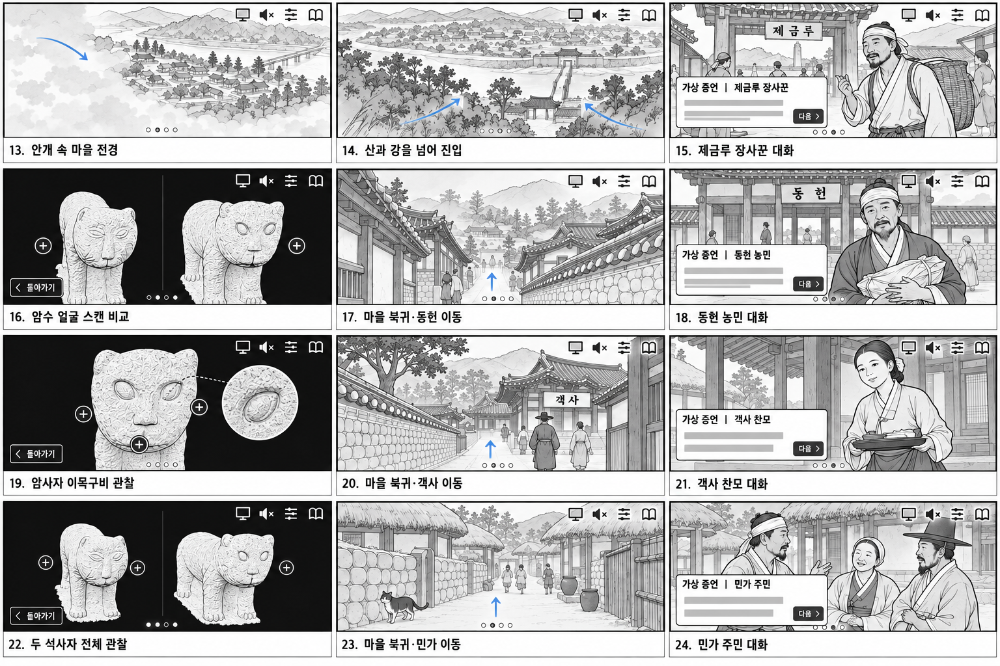
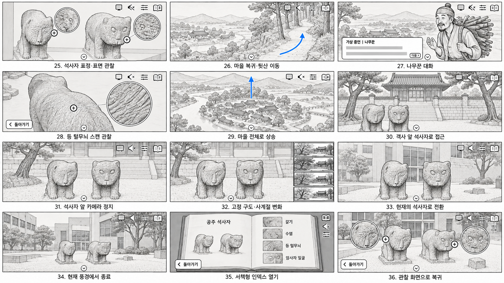

석사자와 공주목 이야기 · 웹 전체 흐름 스토리보드
본편 34컷과 별도 인덱스 2컷. 화면 안의 UX/UI와 컷 아래 짧은 설명을 포함했습니다.
파란선은 이동 방향입니다. 05컷은 석사자 각각의 제자리 회전입니다.
웹 본편 · 결과물01–12 · 화면 선택 → 첫 만남 → 형태 관찰 → 지형 전환
데스크톱·모바일 선택 → 석사자 등장·제자리 회전 → 전체·얼굴·정수리·등·갈기 관찰 → 선택 무늬 확대 → 지형선 전환.

첫 만남·관찰 PNG 저장13–24 · 마을 진입과 인물별 이야기
장사꾼 → 농민 → 찬모 → 민가 주민. 각 인물의 대화 → 관련 석사자 스캔 관찰 → 마을 복귀를 연결합니다. 대사창의 회색 선은 텍스트 자리 표시입니다.

마을·인물 PNG 저장25–34 · 마지막 에피소드 → 마을 전경 → 계절 → 현재
민가 이야기의 표면 관찰 → 뒷산 나무꾼 → 등 털무늬 스캔 → 마을 전체로 상승 → 객사 앞 석사자 접근·정지 → 고정 구도에서 계절 변화 → 현재 풍경에서 종료.

엔딩·인덱스 PNG 저장별도 선택 기능 · 35–36
35 서책형 인덱스 열기 → 36 관찰 화면으로 복귀. 본편은 34컷에서 끝납니다. 인덱스는 목차 버튼을 누를 때의 별도 흐름입니다.
기획안의 웹 스토리라인 제안서·10/04-06·체크리스트와 v048 UI, 이후 요청한 계절·현재 엔딩을 기준으로 구성했습니다. 일러스트는 연출 보드이며 정밀 스캔 도면은 아닙니다.